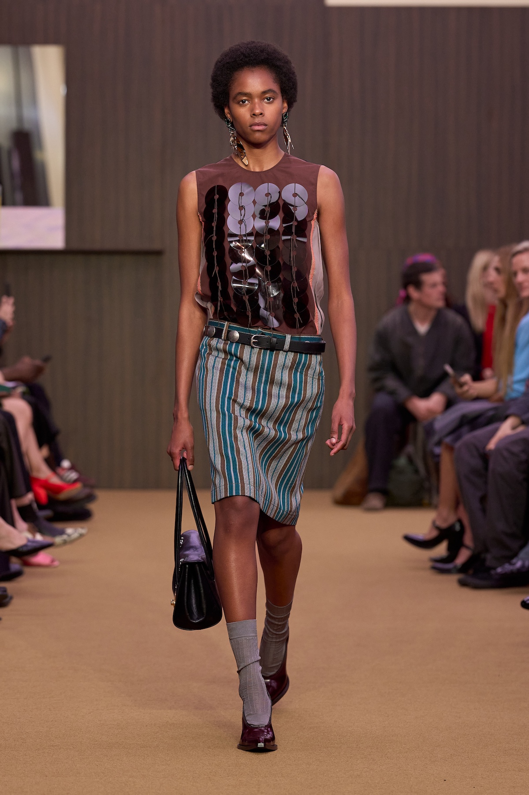

Three months inside a 1936 caffé-concerto on Corso Genova, dressed end to end in red, green and bow tie. Marni does not show a Salone collection. It moves in instead, and pours coffee.
Of all the fashion-house turns staged for Milan Design Week 2026, this is the one with a doorbell. From 20 April through 15 July, the Italian house has wrapped itself around Pasticceria Cucchi, the Liberty-leaning corner café that opened on Corso Genova in 1936 and has been pouring espresso through every shift in Milanese taste since. The collaboration is called, plainly enough, Marni x Cucchi. The conceit is that nothing about the room ought to be subtle.
Walk in past the brass and you find a place rebuilt rather than redecorated. Red and green run through the room in alternating registers — thick rugby stripes on one banquette, fine awning lines on the next, a polka-dot field across the menu cards, a candy-stripe wrap on the gelato cup. A bespoke bow-tie monogram sits where two house identities meet, half Cucchi, half Marni, neither apologising for the other. The interiors were drawn by RedDuo Studio, the Milanese practice that the house tapped to translate its graphic sensibility into furniture, lighting and the kind of small ceramic objects no one designs anymore.
A caffé with a history
Pasticceria Cucchi has been a Milanese institution longer than most of the brands it now hosts. Luigi and Vittorina Cucchi opened the doors in 1936 and built it as a caffé-concerto, with live jazz, a literary set and the kind of crossover crowd that turned a pastry counter into something closer to a Sunday salon. The building was destroyed during the war and rebuilt almost immediately, with the Liberty mouldings, the marble floor and the tall mirrored bar restored in something close to their original lines. Three generations on, it remains family-run.
Marni’s intervention does not pretend to be archaeological. It treats the room as a found object and rewrites its surfaces, while leaving the bones intact. The pastry cases stay where they have always stayed. The brioches still come out at seven thirty in the morning. The waiters circulate in striped jackets cut for the occasion. What changes is the wallpaper of habit: every napkin, every demitasse saucer, every paper sleeve around the breadsticks now carries the house’s hand. It is the most thorough fashion-house takeover Milan has seen in a long while, partly because it refuses to declare itself an installation. Cucchi is still Cucchi. It is just dressed.
A fashion brand inside a 1936 pastry shop is the easiest concept to get wrong. The trick is to leave the building feeling more like itself, not less.
Sienna CaldwellThe aperitivo, recomposed
Cucchi was never strictly a pastry shop. Locals come for the morning espresso and stay for the negroni, and the room shifts character somewhere between five and six on a weekday afternoon. Marni’s residency is engineered around that hinge. Aperitivo is the headline. The house has commissioned a signature menu with Martini, the cocktail list rolling out as a small bound booklet rather than a chalk scribble, and the snack programme has been rebuilt around the regional crostini and tramezzini that Milanese drinkers expect at this hour. The cups and saucers are not decorative. The waiters use them. Two collectible pieces, the espresso cup and a deeper cappuccino, are also for sale at the café and at the Marni boutique on Via Montenapoleone, which is the closest the project comes to a retail moment.
On Thursday evenings, the original idea returns. Twelve ‘Caffé Concerto’ appointments are scheduled across the run, jazz mostly, with a handful of contemporary ensembles built around the room’s narrow acoustics. The house has not announced the line-up in full and is unlikely to. Cucchi was always a place to walk into without a reservation. The series simply restores something that had quietly slipped out of the schedule decades ago, and it lets Marni look like a guest rather than a tenant.

A look from Meryll Rogge’s debut Marni collection, set by Formafantasma. Photography courtesy of Marni / Wallpaper*
Why this and why now
The Cucchi residency is the first design-week project under Meryll Rogge, who took over Marni’s creative direction last year and showed her debut collection in February on a Formafantasma set. The pairing was deliberate. Rogge has spent the early months of her tenure quietly aligning the house with collaborators from the design world rather than with the runway’s usual circle, and Cucchi reads as an extension of that thinking. Where Francesco Risso treated Marni as a stage for his own painterly imagination, Rogge appears to be repositioning it as a host: a brand that brings craftspeople, architects and Milanese institutions into the room and lets them do the work.
That move is not without commercial logic. Salone has, for several years now, become the moment when fashion houses test ideas they cannot easily fold into a runway calendar. Loewe perfected the form under Anderson with its annual chair shows. Gucci has been building tapestries in cloisters. Prada has been quietly running the Triennale. A Marni residency in a 90-year-old café is in a different register from any of those, less curated, less collectible, more rooted in daily Milan. It is also harder to copy. Anyone can stage a chair show. You cannot easily borrow a building that has been pouring espresso since the year of the Berlin Olympics.
The summer ahead
Whether the city takes to it will be visible by June. The first weekend of the residency, during the Salone crush, was always going to be packed. The longer test is whether the Marni-dressed Cucchi keeps drawing the regulars who have been ordering the same brioche for forty years. Early signs are promising. The Liberty room, in striped Marni livery, looks if anything more itself, a place that has always traded on a particular kind of unhurried elegance and now wears the house’s graphic instinct like a tailored coat. Ninety years of Sunday mornings have a way of absorbing a fashion intervention.
What stays after 15 July is the question every collaboration of this kind eventually has to answer. Most of the bespoke objects will not. The cups will become collector items, the menus will be reprinted, the bow-tie monogram will retire to the archive. The room will return to its mirrors and brass. Rogge’s larger thesis — that a fashion house can earn its place in Milan by hosting rather than performing — will outlast the residency by some margin. It is the most interesting thing the brand has done since she arrived, and it did not require a runway.